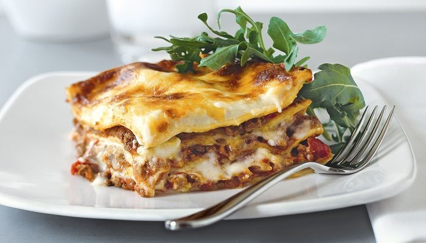

Musaka

Musaka je tradicionalno jelo od mlevenog mesa i krompira. Krompir se moze
zameniti tikvicom a mleveno meso na primer kukuruzom. Pravilo je KROMPIR i
MLEVENO MESO.
Ingidients
- 1 kg krompira
- 500 g mlevenog mesa
- 1/2 glavice crnog/crvenog luka
- 1 kasika sitnog bibera
- 2 kasike soli
- 8 kasika vode
- 6 kasika maslinovog ulja
- 4 jajeta
- 1 solja mleka
- 1 kasika brasna
Steps:
-
Krompir oguliti, narezati na kriskice debljine 2-3mm u jednu posudu.
Dodati 2 kasike ulja i kasiku soli, te sve dobro izmjesati.
- Na ovom mjestu se vec moze upaliti pecnica da se ugrije na 225°C.
-
U drugu posudu pomijesati mljeveno meso sa kasikom bibera, kasiku soli i
sitno sjeckanim lukom. Sve promjesati, pa dodati 4 kasike ulja i 8
kasika vode. Opet dobro izmjesati.
-
I konacno zadnja posuda – zamutiti 4 jajeta, uliti casu mlijeka i kasiku
brasna, te sve dobro izmutiti – najbolje mikserom.
-
OK, sad ide najzabavniji dio! Vatrostalnu posudu dimenzije ca. 35×25cm
podmazati margarinom ili maslinovim uljem, te poplocati dno i stranice
posude kriskicama krompira. Sada dolazi red mesa, pa red krompira, pa
opet red mesa, pa red krompira. Preko ove “konstrukcije” preliti umucenu
smjesu sa jajima.
-
Za one kojima nista nije mrsko ili su vizuelni tipovi: narezati listice
margarina ili putera i poredati ih na vrh musake. Ostali mogu sve (ne
cijelu kuhinju) isprskati maslinovim uljem
-
Musaku peci 40ak minuta na 225°C dok fino ne porumeni, zacvrci i
zamirise, odnosno dok pocne praviti baloncice na povrsini.
Posluzivanje:
Moram napomenuti da musaka ostaje vrela jako dugo, bas kao i vatrostalna
posuda, tako da pazite prste. Sluzi se kao glavno jelo, a hladna moze i
kao predjelo.